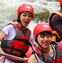

Splash White Water Rafting is proud to be an equal opportunity provider, offering guided experiences on a nondiscriminatory basis. SRE is licensed by the State of Idaho, fully bonded and insured, and holds permits issued by the Cottonwood, Idaho District of the Bureau of the Land Management and by the United States Forest Service, Wallowa-Whitman National Forest.